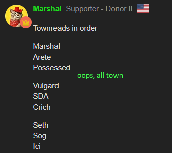

Oh, so that’s what happened.
Id like to first say im really sorry to Arete
I just throw shade on them and its baseless, with the argument that their good and therefore scum
but heres what I had
If your looking for content from me, you genuinely wont find much here. Lots of words but not alot of it is actually hard for me to write - the kind of thing you say to meet a word count but I thought it necessary to have these parts in here. This is an ISO of Arete. TL;DRs at the end of each section.
well ive tried to do Guide to Geyde, now I present
Arete Baugette
Sorry
So lemme split this up, into appropriate categories. Im not sure if I think Arete is a gk/ek before writing this, so this isn’t an essay of why I think their good or evil. This is rather an assessment of their alignment, though I am going in with bias to thinking they have the potential to be evil, instead of just looking at the 66/33, which is why im writing this.
My definition of good/bad progression + what I think gk/ek would do
This is a thing because I want to set the ground ideas of what I think scum/town would do and to apply this to the other tab that will actually mention Arete specifically more then once. A lot of this is standard FoL stuff that I dont want to be arguing about later and I want my opinions on this clear for when I analyze our king. TL;DR at the end.
Good progression on reads is having slight changes at a time, like null reads to scumlean/townleans. Townreads or Scumreads go to null or leans before flipping to the other side. Reasons are given for changes, especially relating to having people leave or enter the PoE(null-scumread).
Bad progression on reads is having large changes at a time, like townreads/scumreads suddenly switching ends. This particularly applies to townreads->scumreads. This should also be noted when somebody tunnels someone else near late game, with bd night killers dead, or someone keeps suggesting someone is scum but never provides valid reasons.
These apply to social reads, if mechanics come in and make your townlean a lockscum, well I guess their lockscum and you had a bad read. But it its something like Ici’s scout and its on a townread, have some hope at least if they claim merc. Specifically for Alice’s case im not sure she was truthful about her targets but I do think that she thinks she should be siding BD rn, because I agree with a lot of her points. Then again, who wouldn’t at least try to be bd when they were considered an optimal lynch?
I see scum getting around looking like having bad progression by having a very exclusive and expected towncore, townleaning some and having majority of the players in the null/scumlean/scumread so its natural to later push people or just tunnel em.
I am guilty of this. I have a mindset of “if they didn’t do anything particularly townie, then they get scumleaned”. Unfortunately, as the last paragraph realizes, im doing exactly that. I tried to make a new readslist last night and I found all my townreads being in some way mech confirmed. I’ve mentioned this a few times before(having way too many scumleans), but mentioning it is rather NAI. Is everything NAI until I know how I’d play as scum? eh theres gotta be a standard to press me against
A GK would be actively needing reads. They’d have scumreads, have townreads and probably townlean slightly townie nulls. They the first day tracking townreads to consider a SF target and later days poking nulls/scumleans for thoughts/reactions/reads. They wouldn’t want claims, except those on their way to be executed and/or have some sorta lead against them. Also, keep conversations going, thats key to actually reading anyone.
A strong EK would be actively studying court. They’d have scumreads, have nulls and probably have a few less townreads/leans then alot of court. Then they’d have a second readslist personally. This way people that they think are actually scum get publicly pushed up a little and can keep the Unseen in your pocket. EK doesnt want scum to be the center of attention and wouldnt want conversation in that regard. Also EK would look for non-mech confirmed pushes to go their way which is easy if you happen to be good at writing alot and you are highly townread for nothing inparticular
TL;DR scum have less townreads, more predictable with who they townread as a result which is something im guilty of. GK trys to dig thoughts out of nulls/scumleans while EK tries to note what people say and keep reads to themself.
using that,
Arete's ISO
Using the ideas above and basic logic, if it can get any more basic then what was above, lets ISO Arete and quote most of what was said. However, I’d like to start with their read on me, because the thought of making this only came to me once I considered that.
What me and Arete have said of each other
Anything here wont be repeated over in the ISO, so here are my thoughts and why im guilty of something.
First, people are oddly silent of my slot, which is something I noticed without re-reading. Then, in order of them being said, (posts arent loading, so…)
Geyde: “do people agree with tbe being pretty pure
fact that nobody is actually talking about slot is weird since it should be a pretty easy call from my pov”
Arete: "just skimmed their Iso and 90 percent of it is mech talk (which I’m reading as ‘newbie from ToL’ rather than as specifically AI)
I liked their wallpost although their reads were really similar to Alice’s, I don’t know if that was deliberate or not"
Ici townleans me
nobody says anything regarding me for a while
Arete: “TBE’s posting feels more like newbie town than newbie scum”
Thats when Arete puts me into the PoE and asks the PoE why the PoE shouldn’t be in the PoE. I do defend myself. Im the only one that does. I want this noted because this whole post was written because I was in Arete’s PoE. It stood out to me and got me to think more on the King’s slot. This is not a spite read on Arete though - thats why there is this section of ‘what we’ve said’, so nobody mistakes this as me scumreading anyone who scumreads me. Though this is a re-eval on someone who scumread/leaned me.
What ive said about Arete - nothing but that readslist
ive gone through my ISO again and found me not mentioning Arete. Infact, my ISO just doesnt make the cut and suddenly im seeing why I was in Arete’s PoE actually. Too much mech stuff, besides my readslist the only person i pressured was Sog.
But speaking of that readlist, I put Arete as a townlean. Why? The same reason I thought Alice was town in FoL 27. I had some trouble reading them and other people townread them so I followed suit. I dont intend to make the same mistake again. (End of the ‘what me and arete have said section’)
Now to actually go through the ISO. I’ve danced around this too much.
this is me with the sad realization I cant post links in these summary things so the post following this one will be the ISO.
incase you opened the above bits that text ends here
(nearly everything above this text was written n2) so then i realized links cant go in the summary things so my ISO goes here(instead of ‘Arete’s ISO’). I wont post everything Arete said, but I will post everything I do have even light opinions on. I should mention that Arete is a strong player thats actually bookposted as scum. Despite this, I haven’t been in Allies chat, I haven’t read Poisonous or Virtuous so I might lack some experience in that regard, but I’m not going to do nothing because of that.
https://forum.imperium42.com/t/sfol-sfol-60-randomizer-day-3-14-18-wazza-loses-his-prized-possession/81476/95?u=theblueelixir
Arete memes here for a while, so im going to excuse the first few posts
https://forum.imperium42.com/t/sfol-sfol-60-randomizer-day-3-14-18-wazza-loses-his-prized-possession/81476/124?u=theblueelixir
I just want to mention that our prince said he wanted this
Read uno, this isnt a reply to anything, but its a read I disagree with.
Vulgard proceeds to make an early ISO Amelia where he puts that he’d vote her if he could. Arete responds,
See, im going to state something here that is a bit of a concern that nobody has said anything about. Why are we putting the weight of the Vulgard read onto Arete? Can we just not read him? In FoL 27 I was told he was one of the easiest people to read because he’s so good at town and weak as scum. Then Arete just takes it casually upon themself to actually do it, and even vulgard just lets it happen. This doesnt necessarily apply to this specific post though. These posts show hesitancy to townlean, which while it usually a more EK then GK thing its literally like 200 posts in. Then again they didnt hesitate to mark Possessed as off, though at the Possessed was doing alot of memeing.
townlean hesitancy again and townleaning the townleaned(sheeping reads)
still nothing new from Arete yet
hey look its something original and its just telling Marshal to stop memeing
hey look its something original and its just hypocritical because Marshal was just posting memes not shutting down your RTs. tbf here I understand your line of thinking though, and me calling you hypocritical doesnt really work here because this is just early signs frustration not you telling double stories.
Im not going to try to keep up with this - Arete scumreads Possessed d1 and wont move it. If a majorer change happens to this read ill quote another d1 Arete/Possessed thing.
https://forum.imperium42.com/t/sfol-sfol-60-randomizer-day-3-14-18-wazza-loses-his-prized-possession/81476/277?u=theblueelixir
https://forum.imperium42.com/t/sfol-sfol-60-randomizer-day-3-14-18-wazza-loses-his-prized-possession/81476/297?u=theblueelixir
https://forum.imperium42.com/t/sfol-sfol-60-randomizer-day-3-14-18-wazza-loses-his-prized-possession/81476/301?u=theblueelixir
Arete v GT. Re-reading and finding Arete a little less then a townlean I wish they GT’d. Not just for towncred, for some security on town’s end. Especially now the NK is out of the way, it’s a crazy specific scenario in which its necessary at the end of the game.
you know this idea of reverse psychology all too well to get towncred for it, sorry.
Actually, there is. Marshal might actually have nightshade wine and decided not to use it, but saying there is no threat is weak and confident.
https://forum.imperium42.com/t/sfol-sfol-60-randomizer-day-3-14-18-wazza-loses-his-prized-possession/81476/353?u=theblueelixir
Arete TR Marshal for this, just didnt think this should be left out.
hosts=himself here
surprised nobody has gone back to this after Derps doesnt do anything d2 and hasnt done anything yet d3, though derps does have a bleed+heal and cant be the convert. Also why was he expected to kill a wolf what
I agree(d) with this read completely so +townie points. But as Marshal pointed out(which i forgot) EK can disguise people so calling out who to invest isn’t a good look.
Arete unsure wether Vul is townie or not. This is the person Marshal asks part way through d2 whether Vul is still town.
https://forum.imperium42.com/t/sfol-sfol-60-randomizer-day-3-14-18-wazza-loses-his-prized-possession/81476/660?u=theblueelixir
https://forum.imperium42.com/t/sfol-sfol-60-randomizer-day-3-14-18-wazza-loses-his-prized-possession/81476/745?u=theblueelixir
I found this funny(NAI tho)
https://forum.imperium42.com/t/sfol-sfol-60-randomizer-day-3-14-18-wazza-loses-his-prized-possession/81476/775?u=theblueelixir
woo +townie points, not sure if this was really obvious by this time by this was a good call
https://forum.imperium42.com/t/sfol-sfol-60-randomizer-day-3-14-18-wazza-loses-his-prized-possession/81476/785?u=theblueelixir
Alice: claims a bleed
Arete: FPS to distract healers lol
dont know why that was the go-to but that was a thing.
I thought that was rather NAI, i could see him as either alignment poking the nulls.
EK still has agenda. Especially considering your hesitancy to townlean + lack of to scumlean, I seriously think it would look alright for your progression to push half the court at this time(d3), with only a little motivation and thats not a spot I want you in.
mindmeld, had the same idea on Sog(lowposting mech) and CRich is logic i can get behind
Fair to not clear a good player for being a good player without very strong reason. After all, thats what im doing, arent I?
https://forum.imperium42.com/t/sfol-sfol-60-randomizer-day-3-14-18-wazza-loses-his-prized-possession/81476/1437?u=theblueelixir
https://forum.imperium42.com/t/sfol-sfol-60-randomizer-day-3-14-18-wazza-loses-his-prized-possession/81476/1602?u=theblueelixir
https://forum.imperium42.com/t/sfol-sfol-60-randomizer-day-3-14-18-wazza-loses-his-prized-possession/81476/1607?u=theblueelixir
literally in a row in the ISO Arete is unsure of Vul then says their ready to LOCK HIM IN. Obviously theres a gap there but what are the odds it changed in their sleep! No sign of ISOing and/or re-eval, so the sudden switch of side could be that EK re-eval and found scum but I townread Vul so I dont see this either aaah Im looking to put this into a way that makes sense maybe Arete just overthought what Vul posted earlier and liked what they saw when they were back for EoD? Actually big brain time - why doesn’t Arete just answer this. Arete if your reading this please explain the read.
thats literally where my brain is at rn. Hopefully no one will be hammered overnight and all I need sleep.
this was orginally just about how arete only rhymes with baugette the ISO on Arete but ive found myself in some more PoE’s and FMPoV being in PoE as town is bad, because that means I’ll probably die soon in the place of scum(i.e. bd nightkill/lynch). So here’s this too.
My grand escape from the PoE
Run as fast as possible
Mech PoE
ways for me to leave the PoE, in order i’d like the ways
- get investigated. This would be incredibly convenient but it only clears me of assassin/convert.
- MB someone who gets occ’d and gossip’d, or get tracked and have my target gossiped(shock reds.)
- nightkill me, I have self-sustain that i’d use.
- hidden abil
- lynch me. this is the worst way out FMPoV, unless it gives something important to town.
Social PoE
Hopfully this’ll help me if im still here for you. As noob scum I could just keep up with my posting and never have these and while im in some PoE’s im townleaned by others so I could probably get away for a while. and if i was convert I feel like I could cause more chaos or just claim an investigative abil and accuse a lowposter, but in the end I have no way of getting out of your social PoE and if what I do doesnt make you make a call then thats that.
1 Like
I had to play super townie with no agenda to counterract the hyperanalyzing
so that was a yikes
NK getting fucked by not knowing they were occ attempted was stupid as well
1 Like
You may have noticed that Alice voted then I followed her vote.
no, vulgard changed his action
the kill was strongmanned
He swapped back to Magical Barrier - but they arcane empowered through both of them
1 Like
I knew someone had a hidden arrow somewhere hidden. Ready to end myself.
I figured it based on how Alice read you
- Alice (pre-in) - Mercenary who was visited by MM/Assassin. SG on contract could be why we’re missing a night kill. I might be one of her targets.
Thanks, I don’t think I did terrible despite the bs setup
not bad at all
2 Likes
Ridiculous how many town were mechanically cleared.
6 Likes
back to the drawing board
randomizer 2 will include mega buffed MM/NK and then they’ll both be OP 
1 Like
Anyway I’m looking forward to the next FoL/SFoL game.
Make it a multiball too
not going full tunnel-mode was pretty good for me
uns were kinda mech-screwed tbh after the n1 fail on alice
1 Like
give me cult

picture courtesy of katze
2 Likes
Up next should be my cult majority game if the review goes smoothly
2 Likes